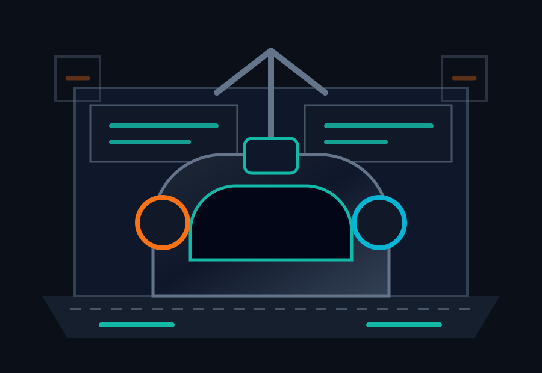

Source connections
Connect existing platforms
Click a connector to sign in to your provider, authorize Codecanic, and pick a project — guided step-by-step.
Unified code operations
Connect code hosts, deployment platforms, and app projects. Codecanic builds a prioritized repair report, then lets users approve all fixes or only the segments they trust.

Source connections
Click a connector to sign in to your provider, authorize Codecanic, and pick a project — guided step-by-step.
Scan pipeline
Review before repair
Repair jobs
Audit trail
Launch path
This MVP ships as a PWA for the web. The same product surface can be wrapped with Capacitor for App Store and Google Play releases, while backend workers handle connector authorization, scans, repair jobs, and audit logs.
How it works
Codecanic is a free, sponsor-supported code-operations tool that connects to the platforms you already use — GitHub, GitLab, Bitbucket, Vercel, Railway, and Xcode projects — and turns a sprawling codebase into a prioritized, human-readable repair plan. Instead of stitching together half a dozen linters, scanners, and dashboards, you connect a source once and Codecanic handles intake, diagnosis, and the repair lift in a single workflow.
Authorize a connector and pick a repository or project. Codecanic clones the code in an isolated worker, reads your dependency manifests, lockfiles, CI configuration, and infrastructure-as-code, and assembles a complete picture of the stack before a single check runs.
The scan engine runs software-composition analysis against known-vulnerability databases, static analysis for code-quality and security defects, secret detection across the git history, and supply-chain checks on your third-party packages. Every finding is scored by severity and tagged as critical, security, performance, or autofixable.
Review the findings report, approve all fixes or only the segments you trust, and Codecanic opens real pull requests with the changes — leaving a full audit trail of what was scanned, what was approved, and who approved it. You stay in control; nothing is merged without a human sign-off.
What it detects
FAQ
Yes. Codecanic is free for every team and supported by unobtrusive sponsor placements. There is no paid tier required to scan a repository or open repair pull requests.
No. Codecanic only proposes changes as pull requests after you explicitly approve them. Nothing is merged into your codebase without a human review and sign-off.
Codecanic uses the standard OAuth or token flow for each provider and requests only the scopes needed to read your code and open pull requests. You can disconnect any connector at any time, which revokes the stored credential.
Repositories are cloned into isolated, ephemeral workers for the duration of a scan and are not retained afterward. See the for the full detail on data handling and retention.
Create a free account, connect a source above, and run your first scan. The whole flow — from connecting a provider to reviewing your first findings report — takes a few minutes.
Codecanic is operated as a free, sponsor-supported service. Read our and , or email hello@codecanic.app with any questions.